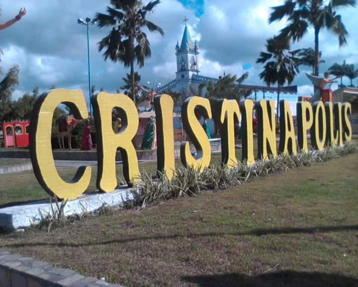

Cristinápolis
História
A povoação que se localiza (e ainda permanece) no planalto, entre os riachos Urubas de Cima e Urubas de Baixo, chamava-se primitivamente “Chapada”. Desde recuados tempos e por longo espaço de anos, a região foi reduto de gentios que ali se encontravam, muitos deles vindo em sucessivas fugas. O povoado por muitas décadas vivia isolado do elemento branco, que ali ia chegando muito lentamente, e, em consequência, o seu desenvolvimento retardava. Por Lei Provincial nº 1238, de 04 de março de 1882, a povoação Chapada foi elevada à categoria de Vila, com o nome de “VILA CRISTINA”, numa homenagem à Imperatriz do Brasil, D. Tereza Cristina, sendo o território da Vila desmembrado do Município de Espírito Santo (hoje Indiaróba). Pelo Decreto Lei nº 69, de 28 de março de 1938, a Vila Cristina foi elevada à categoria de cidade. Mais tarde, pelo Decreto Lei Estadual nº 377, de 31 de dezembro de 1943, revogado pelo de nº 533, de 07 de dezembro de 1944, o Município de Vila Cristina passou a denominar-se “Cristinápolis”.
fonte: https://cidades.ibge.gov.br/brasil/se/cristinapolis/historicoDados Gerais de acordo com o IBGE
| Prefeito (a) | Sandro de Jesus dos Santos |
| Vice-Prefeito (a) | José Menezes Lima |
| Site do município | https://cristinapolis.se.gov.br/ |
| Área territorial | 228,556 km² |
| População estimada | 18.181 pessoas |
| Densidade demográfica | 69,94 hab/km² |
| IDHM | 0,553 |
| PIB per capita | R$ 11.747,71 |